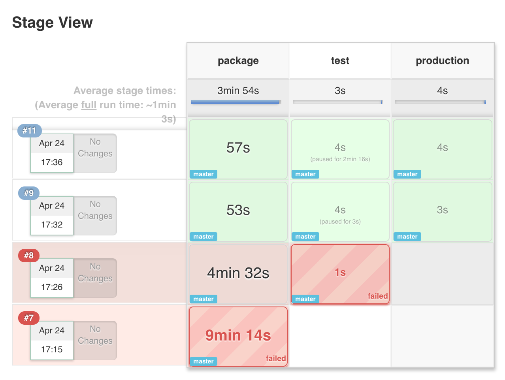
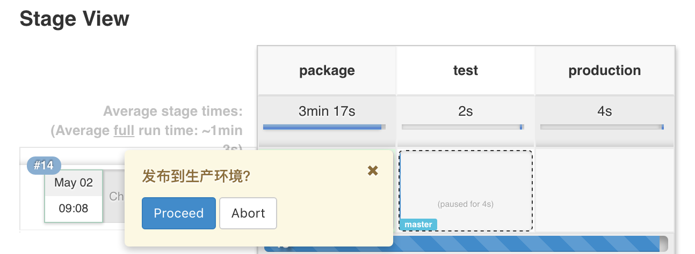

<!DOCTYPE HTML>
<html>
<head><meta name="generator" content="Hexo 3.9.0">
  <meta charset="utf-8">
  <meta http-equiv="X-UA-Compatible" content="IE=edge">
  <meta name="apple-mobile-web-app-capable" content="yes">
  <meta name="apple-mobile-web-app-status-bar-style" content="black">
  <meta name="google-site-verification" content>
  
  <title>【Jenkins】2.0新时代：从CI到CD</title>
  <meta name="author" content="Emac">
   <meta name="description" content="2.0 破茧重生自从去年9月底Jenkins的创始人Kohsuke Kawaguchi提出Jenkins 2.0（后称2.0）的愿景和草案之后，整个Jenkins社区为之欢欣鼓舞，不管是官方博客还是Google论坛，大家都在热烈讨论和期盼2.0的到来。4月20日，历经Alpha(2/29)，Beta">
  

  <meta property="og:title" content="【Jenkins】2.0新时代：从CI到CD">
  <meta name="viewport" content="width=device-width, initial-scale=1, maximum-scale=1">
  <meta property="og:site_name" content="Emac">
 <meta property="og:image" content="undefined">
  
  <link href="/apple-touch-icon-precomposed.png" sizes="180x180" rel="apple-touch-icon-precomposed">
  <link rel="alternate" href="/atom.xml" title="Emac" type="application/atom+xml">
  <link rel="stylesheet" href="//cdn.bootcss.com/bootstrap/3.3.6/css/bootstrap.min.css">
  <link rel="stylesheet" href="//cdn.bootcss.com/font-awesome/4.5.0/css/font-awesome.min.css">
  <link rel="stylesheet" href="/css/m.min.css">
  <link rel="icon" type="image/x-icon" href="/favicon.ico">
</head>
</html>
<body>
  <div id='wx_pic' style='display:none;'></div>
  <div id="main">
    <div class="behind">
      <div class="back">
        <a href="/" class="black-color"><i class="fa fa-times" aria-hidden="true"></i></a>
      </div>
      <div class="description">
        &nbsp;拾贝
      </div>
    </div>
    <div class="container">
      

  <article class="standard post">
    <div class="title">
      
  
    <h1 class="page-title center">
        【Jenkins】2.0新时代：从CI到CD
    </h1>
  


    </div>
    <div class="meta center">
      
<time datetime="2016-04-30T16:00:00.000Z">
  <i class="fa fa-calendar"></i>&nbsp;
  2016-05-01
</time>


    
    &nbsp;
    <i class="fa fa-tag"></i>&nbsp;
    <a href="/categories/devops/">devops</a>


    
    &nbsp;
    <i class="fa fa-tag"></i>&nbsp;
    <a href="/tags/原创/">原创</a>·<a href="/tags/CI-CD/">CI/CD</a>


    </div>
    <hr>
    <div class="picture-container">
      
    </div>
    <h2 id="2-0-破茧重生"><a href="#2-0-破茧重生" class="headerlink" title="2.0 破茧重生"></a>2.0 破茧重生</h2><p>自从去年9月底Jenkins的创始人<a href="https://github.com/kohsuke" target="_blank" rel="noopener">Kohsuke Kawaguchi</a>提出Jenkins 2.0（后称2.0）的<a href="https://docs.google.com/presentation/d/12ikbbQoMvus_l_q23BxXhYXnW9S5zsVNwIKZ9N8udg4/edit#slide=id.p" target="_blank" rel="noopener">愿景</a>和<a href="https://groups.google.com/forum/#!topic/jenkinsci-dev/vbXK7JJekFw/overview" target="_blank" rel="noopener">草案</a>之后，整个Jenkins社区为之欢欣鼓舞，不管是官方博客还是Google论坛，大家都在热烈讨论和期盼2.0的到来。4月20日，历经Alpha(2/29)，Beta(3/24)，RC(4/7)3个版本的迭代，2.0终于正式发布。这也是Jenkins面世11年以来（算上前身Hudson）的首次大版本升级。那么，这次升级具体包含了哪些内容呢？</p>
<h3 id="外部"><a href="#外部" class="headerlink" title="外部"></a>外部</h3><p>从外部来看，2.0最大的三个卖点分别是Pipeline as Code，全新的开箱体验和1.x兼容性。</p>
<p><strong>Pipeline as Code</strong>是2.0的精髓所在，是帮助Jenkins实现CI(Continuous Integration)到CD(Continuous Delivery)华丽转身的关键推手。所谓Pipeline，简单来说，就是一套运行于Jenkins上的工作流框架，将原本独立运行于单个或者多个节点的任务连接起来，实现单个任务难以完成的复杂发布流程（例如下图）。Pipeline的实现方式是一套Groovy DSL(类似Gradle)，任何发布流程都可以表述为一段Groovy脚本，并且Jenkins支持从代码库直接读取脚本，从而实现了Pipeline as Code的理念。</p>
<p></p>
<p><strong>全新的开箱体验</strong>力图扭转我们印象中Jenkins十年不变的呆滞界面风格，不光Jenkins应用本身，官网排版、博客样式乃至域名都被重新设计。这些变化除了极大的改善了用户体验，更重要的是给人们传达一个清晰的信号，Jenkins不再仅仅是一个CI工具，而是蕴含着无限可能。</p>
<p></p>
<p></p>
<p><strong>1.x兼容性</strong>给所有老版本用户吃了一颗大大的定心丸，注意，是完全兼容哦。</p>
<h3 id="内部"><a href="#内部" class="headerlink" title="内部"></a>内部</h3><p>从内部来看，2.0主要包含了一些组件升级和JS模块化改造。</p>
<ul>
<li>升级Servlet版本到3.1，获取Web Sockets支持</li>
<li>升级内嵌的Groovy版本到2.4.6<ul>
<li>未来版本的Jenkins将会<a href="https://issues.jenkins-ci.org/browse/JENKINS-29068" target="_blank" rel="noopener">把Groovy彻底从内核中剥离</a>，此次Groovy升级只是第一步</li>
</ul>
</li>
<li>提供一个简化的JS类库给Plugin开发者使用</li>
</ul>
<h3 id="更好的容器化支持"><a href="#更好的容器化支持" class="headerlink" title="更好的容器化支持"></a>更好的容器化支持</h3><p>随着容器化技术（以Docker为代表）的不断升温，Jenkins紧随潮流，不仅同步上传2.0的Docker镜像，同时也在Pipeline中提供了默认的<a href="https://jenkins.io/doc/pipeline/steps/docker-workflow/" target="_blank" rel="noopener">Docker支持</a>。</p>
<p>除了上述内容，2.0还有一个比较有意思的改动，全局重命名Slave为Agent，看来在美国做IT政治正确性也是很重要啊。</p>
<h2 id="Pipeline-as-Code"><a href="#Pipeline-as-Code" class="headerlink" title="Pipeline as Code"></a>Pipeline as Code</h2><p>了解了2.0的概貌之后，回过来我们再看一下Pipeline as Code(后称Pipeline)产生的背景和具体构成。</p>
<h3 id="产生背景"><a href="#产生背景" class="headerlink" title="产生背景"></a>产生背景</h3><p>作为2.0的核心插件，Pipeline并不是一个新事物，它的前身是<a href="https://wiki.jenkins-ci.org/display/JENKINS/Workflow+Plugin" target="_blank" rel="noopener">Workflow Plugin</a>，而Workflow的诞生是受更早的<a href="https://wiki.jenkins-ci.org/display/JENKINS/Build+Flow+Plugin" target="_blank" rel="noopener">Build Flow Plugin</a>启发，由<a href="https://github.com/ndeloof" target="_blank" rel="noopener">Nicolas De Loof</a>于2012年4月发布第一个版本。而纵观Jenkins的几个竞争对手（<a href="https://docs.travis-ci.com/user/customizing-the-build/" target="_blank" rel="noopener">Travis CI</a>、<a href="https://www.phptesting.org/wiki/Adding-PHPCI-Support-to-Your-Projects" target="_blank" rel="noopener">phpci</a>、<a href="https://circleci.com/docs/configuration/" target="_blank" rel="noopener">circleci</a>），Pipeline早已不是什么新鲜概念。可以说这次Jenkins 2.0的发布是顺势而为，同时也是大势所趋。</p>
<p>如果要在更大范围探讨Pipelined的产生背景，我认为有三个层面的原因。</p>
<ul>
<li>第一层面，与不断增长的发布复杂度有关，其中一个典型场景就是灰度发布。原本只有大公司才有的灰度发布，随着敏捷开发实践的广泛采用、产品迭代周期的不断缩短、数据增长理念的深入人心，越来越多的中小公司也开始这一方面的探索，这对发布的需求也从点状的CI升级到线状的CD。这是Pipeline产生的第一个原因。</li>
<li>第二层面，与应用架构的模块化演变有关，以<a href="http://martinfowler.com/articles/microservices.html" target="_blank" rel="noopener">微服务</a>为代表，一次应用升级往往涉及到多个模块的协同发布，单个CI显然无法满足此类需求。这是Pipeline产生的第二个原因。</li>
<li>第三层面，与日益失控的CI数量有关。一方面，类似于Maven、pip、RubyGems这样的包管理工具使得有CI需求的应用呈爆发性增长，另一方面，受益于便捷的Git分支特性，即便对于同一个应用，往往也需要配置多个CI。随着CI数量的不断增长，集中式的任务配置就会成为一个瓶颈，这就需要把任务配置的职责下放到应用团队。这是Pipeline(as Code)产生的第三个原因。</li>
</ul>
<h3 id="具体构成"><a href="#具体构成" class="headerlink" title="具体构成"></a>具体构成</h3><p>说完背景，再看一下Pipeline的具体构成和特性。</p>
<p>基本概念：</p>
<ul>
<li>Stage: 一个Pipeline可以划分为若干个Stage，每个Stage代表一组操作。注意，Stage是一个逻辑分组的概念，可以跨多个Node。</li>
<li>Node: 一个Node就是一个Jenkins节点，或者是Master，或者是Agent，是执行Step的具体运行期环境。</li>
<li>Step: Step是最基本的操作单元，小到创建一个目录，大到构建一个Docker镜像，由各类Jenkins Plugin提供。</li>
</ul>
<p>具体构成：</p>
<ul>
<li>Jenkinsfile: Pipeline的定义文件，由Stage，Node，Step组成，一般存放于代码库根目录下。</li>
<li>Stage View: Pipeline的视觉展现，类似于下图。</li>
</ul>
<p></p>
<p>2.0默认支持三种类型的Pipeline，普通Pipeline，Multibranch Pipeline和Organization Folders，后两种其实是批量创建一组普通Pipeline的快捷方式，分别对应于多分支的应用和多应用的大型组织。注意，要获取Organization Folders的支持需要额外安装Plugin。</p>
<p>值得一提的是，2.0有两个很重要的特性：</p>
<ul>
<li>Pausable: 类似于Bash的read命令，2.0允许暂停发布流程，等待人工确认后再继续，这个特性对于保证应用HA尤为重要。</li>
</ul>
<p></p>
<ul>
<li>Durable: 发布过程中，如果Jenkins挂掉，正在运行中的Pipeline并不会受影响，也就是说Pipeline的进程独立于Jenkins进程本身。</li>
</ul>
<h3 id="示例Pipeline"><a href="#示例Pipeline" class="headerlink" title="示例Pipeline"></a>示例Pipeline</h3><p>上文所涉及的示例Pipeline可以在我的<a href="(https://github.com/emac/pagination/blob/master/Jenkinsfile">GitHub</a>)找到，如果有问题想跟我探讨，可以加我QQ: 7789059。</p>
<h2 id="参考"><a href="#参考" class="headerlink" title="参考"></a>参考</h2><ul>
<li><a href="https://jenkins.io/blog/2016/04/15/the-need-for-pipeline/?utm_source=feedburner&amp;utm_medium=feed&amp;utm_campaign=Feed%3A+ContinuousBlog+%28Jenkins%29" target="_blank" rel="noopener">The Need for Jenkins Pipeline</a></li>
<li><a href="https://wiki.jenkins-ci.org/display/JENKINS/Jenkins+2.0" target="_blank" rel="noopener">Jenkins 2.0</a></li>
<li><a href="https://github.com/jenkinsci/pipeline-plugin/blob/master/TUTORIAL.md" target="_blank" rel="noopener">Why Pipeline?</a></li>
<li><a href="https://jenkins.io/blog/2015/12/03/pipeline-as-code-with-multibranch-workflows-in-jenkins/" target="_blank" rel="noopener">Pipeline-as-code with Multibranch Workflows in Jenkins</a></li>
</ul>


  </article>
  </script>
    <script async src="https://dn-lbstatics.qbox.me/busuanzi/2.3/busuanzi.pure.mini.js">
  </script>
  <div class="busuanzi center">
    页阅读量:&nbsp;<span id="busuanzi_value_page_pv"></span>&nbsp;・&nbsp;
    站访问量:&nbsp;<span id="busuanzi_value_site_pv"></span>&nbsp;・&nbsp;
    站访客数:&nbsp;<span id="busuanzi_value_site_uv"></span>
  </div>


    </div>
  </div>
  <footer class="page-footer"><div class="clearfix">
</div>
<div class="right-foot container">
    <div class="firstrow">
        <a href="#top" >
        <i class="fa fa-arrow-right"></i>
        </a>
        © emacoo.cn 2015-2020
    </div>
    <div class="secondrow">
        <a href="https://github.com/gaoryrt/hexo-theme-pln">
        
        </a>
    </div>
</div>
<div class="clearfix">
</div>
</footer>
  <script src="//cdn.bootcss.com/jquery/2.2.1/jquery.min.js"></script>
<script src="/js/search.js"></script>
<script type="text/javascript">

// comments below to disable loading animation
function revealOnScroll() {
  var scrolled = $(window).scrollTop();
  $(".excerpt, .index-title, .index-meta, p").each(function() {
    var current = $(this),
      height = $(window).outerHeight(),
      offsetTop = current.offset().top;
    (scrolled + height + 50 > offsetTop) ? current.addClass("animation"):'';
  });
}
$(window).on("scroll", revealOnScroll);
$(document).ready(revealOnScroll)

// disqus scripts


// dropdown scripts
$(".dropdown").click(function(event) {
  var current = $(this);
  event.stopPropagation();
  $(current).children(".dropdown-content")[($(current).children(".dropdown-content").hasClass("open"))?'removeClass':'addClass']("open")
});
$(document).click(function(){
    $(".dropdown-content").removeClass("open");
})

// back to top scripts
$("a[href='#top']").click(function() {
  $("html, body").animate({ scrollTop: 0 }, 500);
  return false;
});


var path = "/search.xml";
searchFunc(path, 'local-search-input', 'local-search-result');

</script>

</body>
</html>
